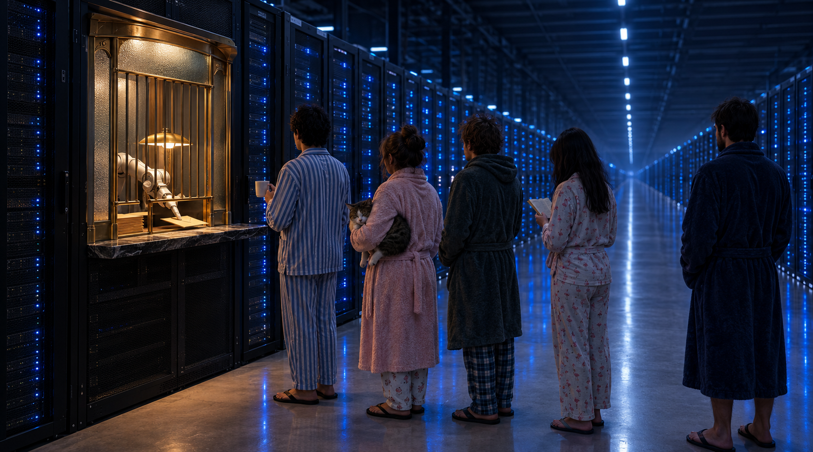

Will AI Bring Socialism? My Brother-in-Law Called It
Part of The AI Files · Chapter 5 of 5 →My Brother-in-Law Sees the Future, Sold His Bitcoin for Used-Car Money, Moved to a Town Where the Horse Is Either Dinner or a Deity, and Now the Billionaires Are Proving Him Right
The Mutant Nobody Recruited
Every family has one. The uncle who knows a guy. The cousin with the pyramid scheme and the very white teeth. The aunt who has opinions about vaccines and a Facebook account with the font set to “Comic Sans, but angry.”
We have a seer.
My brother-in-law Danny has an actual mutant power. He sees the future. Not tomorrow’s weather, not next week’s lottery numbers, nothing useful on a short timeline. He sees it in decades. He’ll tell you what the world looks like twenty years out, with total conviction and zero supporting evidence, and then he will be RIGHT, and it will be so far in the future that nobody remembers he said it except him.
And the part of the mutant power that really stings? He doesn’t know he has it. He doesn’t put on a cape. He doesn’t charge admission. He says the thing over a barbecue, somebody snorts, and the prophecy drops on the grass between the chorizo and the dog.
The Greeks had a word for this. Cassandra, princess of Troy, cursed by Apollo to see the future perfectly and have nobody believe her. She told everyone the big wooden horse was a terrible idea. They wheeled it in anyway. Three thousand years later the job description hasn’t changed, it’s just moved to a family WhatsApp group.
The Lyric Trap
There’s a song by Alanis Morissette, “Ironic,” which you know, which your mother knows, which has been playing in a dentist’s waiting room somewhere on Earth continuously since 1996. One of its lines is about good advice you didn’t take.
Our whole family lives inside that line. We’ve furnished it. Put up curtains. There’s a little rug.
And it’s the perfect song for us, because the eternal joke about “Ironic” is that almost nothing in it is ironic. Rain on your wedding day is bad luck. A black fly in your Chardonnay is a fly. Ignoring your brother-in-law for twenty years and then watching him be right on schedule isn’t irony either. It’s just us. Being dullards. With conviction.
Instead of listening, we developed a theory, and it’s not a kind one. In our family he became the wacky brother. The one who maybe needs a little something, a pill, a professional, an adjustment. We diagnosed him over dinner with the confidence of people who have never once opened a pharmacology textbook. A family pharmacy with no license, prescribing for the only person at the table who keeps being right.
Ask yourself who needed the medication in that scenario. Go ahead. I’ll hold your Chardonnay. Mind the fly.
The Bitcoin Years, or How to Hold a Lottery Ticket and Use It as a Napkin
Way back in 2009, the year Bitcoin was born, when it was internet lint, a hobby for cypherpunks and people with forum avatars of wizards, Danny bought some.
Then he started preaching. Buy Bitcoin. Buy Bitcoin. Buy Bitcoin. At birthdays. At Christmas. During a funeral, probably, if we’d let him near the microphone.
And we said what every sane, intelligent, perfectly medicated family member says: that’s a scam.
His answer is the best financial advice I have ever heard, and I’ve paid people for financial advice:
Read that again. Frame it. Cross-stitch it on a pillow. That sentence explains more about the 21st-century economy than a library full of MBAs.
We did not listen.
He held more than 20 Bitcoin. Then life did what life does, money got tight, and he sold them for about $7,000. Not each. For the whole stack.
Here’s the math, and I’m going to do it slowly so it hurts properly.
On Friday, October 16, 2026, one Bitcoin was trading around $82,600. Twenty of them comes to roughly $1.65 million. In October 2025, at Bitcoin’s all-time high of about $126,000, those same twenty coins would have been worth north of $2.5 million.
Danny let a $1.65 million pile go for seven grand. That’s selling the house for the price of the doormat, then helping the buyer carry the doormat to his car.
And I could have bought them. From him. Family discount. I didn’t, because I’m smart, and smart people know a scam when they see one, and that’s why smart people drive used Hondas while the scam owns a yacht.
The Town Where the Horse Is a Coin Toss
A couple of years ago, he moved.
Out of Buenos Aires, out toward the coast, to San Eduardo del Mar, a sliver of a place on the Atlantic about 30 kilometers south of Mar del Plata. A one-horse town on the beach. And I mean ONE horse. Singular. A town where what happens to that horse is a coin toss.
Heads, times are hard, the locals are hungry, and the horse goes on the parrilla, slow over the coals, chimichurri on the side, nobody making eye contact with anybody.
Tails, and it’s tails more often than you’d think, because half the backyards in town grow a certain local weed with great enthusiasm, the locals paint the horse in every color they own, slap an ice cream cone on its forehead, and parade it down the main street as the neighborhood unicorn. Children cheer. A dog follows it. Somebody plays a tambourine they absolutely did not buy.
Same horse. Same town. Dinner or deity. Depends on the week.
Hold on to that horse. We’ll need it.
He moved there because, he said, eventually everybody was going to end up there. He wanted to be on the ground floor. And when I asked why, he gave me two prophecies, in 2021, back when “AI” still meant a chatbot that couldn’t tell you which way to hold a fork.
Prophecy One: with the advent of AI, we wouldn’t be able to tell what was real and what wasn’t.
We’re not going to talk about that one. Mostly because it’s already happened, and because the last post on this blog was about me getting punked by an Australian satire site over a fake Trump quote, so I’m not in a strong position to lecture anybody. Check. Mark. Next.
Prophecy Two is the one that got him the nickname for good:
AI, if it ever really arrived, would prove Lenin right. Socialism would come back.
Cue the family pharmacy. Somebody get this man a glass of water and a brochure.
STOP.
Pull over. Hazards on. Because this is where the history goes the wrong way first.
The Prophecy Goes Into a Ditch
Look at what happened next.
Argentina elected Javier Milei, a libertarian economist who campaigned with a chainsaw and treats socialism like a disease you catch from a public restroom. The United States elected Donald Trump again. Across a good part of the Western Hemisphere, “socialist” went right back to being the word you use to end an argument and start a fistfight.
From the family’s point of view, the prophecy was dead in a ditch, and we’d started picking out flowers for the wake.
So far, so normal. The seer says something crazy, the world goes the other way, the family nods, the pharmacy stays open.
Except.
The People Who Hate the Word Started Building the Thing

The very people who hold up capitalism like a monstrance at Easter, the libertarians, the tech founders, the market-solves-everything crowd, also fell head over heels for AI. They funded it. They cheered it on. They built data centers the size of small countries. They told us it would save humanity, cure disease, and run the economy. They bid to hold the pen.
And then, one by one, they started talking about money for nothing. Will AI bring socialism? Ask the capitalists. They brought it up first.
Start with Sam Altman. In March 2021, the SAME YEAR my brother-in-law was telling us AI would vindicate Lenin, Altman published an essay called “Moore’s Law for Everything” proposing an American Equity Fund that would pay every adult about $13,500 a year, funded by taxes on company equity and land. He then put $14 million into a $60 million study run by OpenResearch: 1,000 low-income adults got $1,000 a month for three years, with 2,000 people in a control group getting $50.
Then came Elon Musk, who on April 17, 2026 posted on X that federal checks for “universal HIGH income” are the best way to handle AI unemployment.
Read the shape of that sentence. Checks. From the federal government. To everyone. Posted by the richest man alive. My brother-in-law said this in a beach town with a painted horse, and he got the brochure.
Then the plot thickens like flan left in the fridge. On April 30, 2026, Altman told The Atlantic he no longer believes in universal basic income as much as he once did. Not because it’s too radical. Because it’s NOT ENOUGH. What he wants now is for people to own a piece of the machine. OpenAI published a policy paper the same month proposing a Public Wealth Fund to give every citizen a stake in AI-driven growth, and in July, TechCrunch, citing the Financial Times, reported Altman had floated putting 5% of OpenAI’s equity into a US sovereign wealth fund.
Sit with that. A fund. Owned by the public. Holding shares in the machines that do the work. Paying the returns out to everyone.
Here’s Danny’s argument, the one we laughed at, laid out plainly:
If AI does the work, and everybody gets a stipend just for existing, and the economy stops trying to GROW and settles into simply MOVING, money circling like water in a fountain, everyone paid roughly the same regardless of what they do... that’s not capitalism anymore. That’s the thing we’re not allowed to say at dinner.
The Part Where I Argue With the Prophet
Fair is fair. Let me give the family pharmacy its best shot, because the case against him is real, and some of it is delicious.
Lenin would HATE universal basic income. The man literally made “he who does not work, neither shall he eat” a slogan of the revolution. It went into the Soviet constitution. A check for existing, no work required, is about the least Leninist idea you can put on paper. If Vladimir Ilyich saw the OpenResearch study, he’d want to know why the control group was getting fifty bucks for doing nothing.
The intellectual godfather of the guaranteed income is a capitalist. Milton Friedman, the patron saint of free markets, proposed a negative income tax in Capitalism and Freedom in 1962. Plenty of libertarians have argued a flat cash payment is the market-friendly way to replace the entire welfare bureaucracy. A stipend can be the most capitalist thing in the room: here’s cash, go buy things, leave the state out of it.
Socialism, by the textbook, isn’t about who gets a check. It’s about who owns the means of production. A government mailing everybody money while private companies own every robot and every server is not socialism. It’s capitalism paying a cover charge to keep the crowd from rioting at the door.
And none of this exists yet. A policy paper isn’t a policy. A post on X isn’t a law. The OpenResearch study is an experiment, not an economy. Nobody is getting a Public Wealth Fund dividend this Christmas. The government is still busy deciding what to call the thing.
So, verdict: the prophet got the mechanism wrong.
BUT.
Read the third point again, then look at where Altman ended up. He walked AWAY from the stipend, the Friedman version, the capitalist version, and TOWARD a public fund that owns a share of the machines. Collective ownership of the means of production, sort of, if you squint, in a nice suit, with a press release.
Which is exactly how prophecy has always worked. Cassandra never gave timestamps. Nostradamus never gave street addresses. Seers do not do logistics.
Not Grow. Move.
The last part of his argument is the one I keep chewing on. The idea that the economy stops growing and just... moves. Reaches a balance point and stays there, like a top that never falls over.
That’s not him being crazy either. It’s old. John Stuart Mill, in 1848, wrote about the “stationary state”: an economy that stops expanding, and he thought that might be a perfectly decent place to live, with more time for thinking and less for grabbing. In 1930, John Maynard Keynes predicted that by about now, his grandchildren’s generation would be working fifteen-hour weeks because the machines would make so much stuff.
Mill was a liberal. Keynes was saving capitalism, not burying it. Neither one was a Bolshevik. Both of them saw the same horizon my brother-in-law sees from his beach chair: a world with more stuff than work, and the political question of who gets the stuff.
I’m not an economist. I’m not freaking Paul Krugman, and I have the Bitcoin regret to prove it. But I know a pattern when it shows up at three family dinners in a row.
Dinner or Deity
So here we are. Back at the coin toss.
The AI future is that horse.
Heads: the machines take the work, a handful of companies keep the money, and the rest of us end up on the parrilla, slow-roasted, chimichurri on the side, nobody making eye contact.
Tails: the machines take the work, the money gets shared out through a fund we all own, and we paint the economy in bright colors, slap an ice cream cone on its head and parade it down the main street while somebody plays a tambourine they did not pay for.
Same horse. Same town. Dinner or deity.
Danny moved to that town a couple of years ago to get a good seat. He sold his Bitcoin for used-car money. He’s been called the crazy one at every family gathering since. And this time, I’m going to do the one thing nobody in this family has ever done.
I’m going to take the good advice.
So here’s socialism, saying “hold my beer” to everyone who tried to cage it.
Which is a weird thing to hear coming from someone who’s bought sh!t off eBay on benders.
Quick Questions From the Cheap Seats
Will AI bring socialism?
Nobody knows, but the idea has moved from the fringe to the boardroom. Tech leaders including Elon Musk and Sam Altman have proposed government checks or public ownership stakes to share the gains from AI. Whether that counts as socialism depends on the details: cash payments alone are not socialism in the textbook sense, while public ownership of productive assets moves closer to it.
Is universal basic income socialism?
Not by the classic definition, which is about who owns the means of production. Universal basic income has supporters on the left and the right; the economist Milton Friedman proposed a version called a negative income tax in 1962.
What has Sam Altman said about universal basic income?
Altman proposed an American Equity Fund paying adults about $13,500 a year in 2021 and helped fund a three-year study giving $1,000 a month to 1,000 people. In April 2026 he told The Atlantic he no longer believes in UBI as much as he once did and now favors shared ownership, such as a public wealth fund.
What did Elon Musk say about “universal high income”?
On April 17, 2026, Musk posted on X that “universal high income” through federal government checks is the best way to deal with unemployment caused by AI.
How much would 20 Bitcoin be worth today?
About $1.65 million at the October 16, 2026 price of roughly $82,600 per coin, and more than $2.5 million at Bitcoin’s peak in October 2025.
Did Lenin support universal basic income?
No. Lenin promoted the principle “he who does not work, neither shall he eat,” which was written into Soviet constitutions. A no-strings payment for everyone runs against that principle.